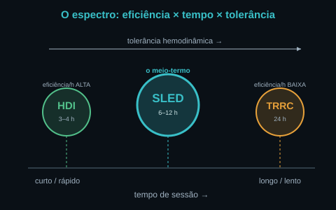
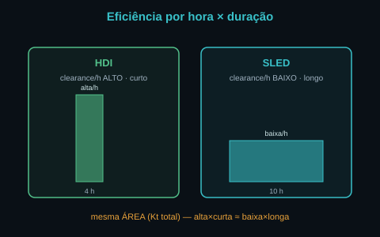
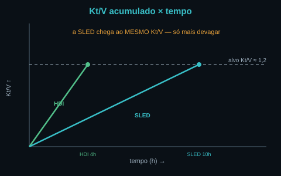
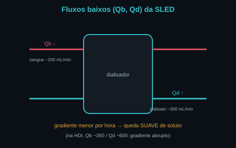
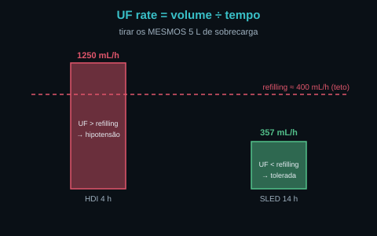
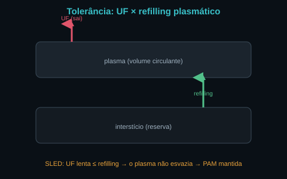
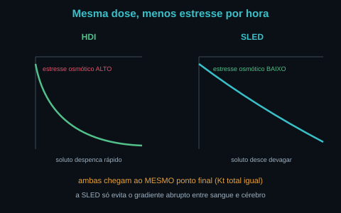
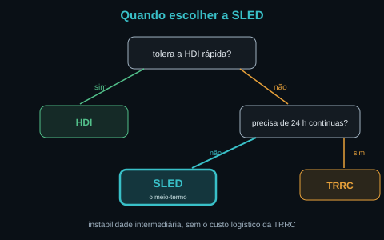

A SLED é o meio-termo. Entre a HDI (intensa e curta) e a TRRC
(gentil e contínua 24 h), há uma terapia que pega o melhor dos dois: a dose total da HDI com a
tolerância aproximada da TRRC. O segredo é a aritmética: dose = clearance × tempo. Baixe o
clearance (fluxos baixos) e estenda o tempo, e a dose total não muda — mas a taxa de tudo cai. As
Fig. 1–8 voltam no Caso, na Trilha e na Avaliação. Atribuição em CREDITS.md (em curadoria).
As três modalidades vivem num único eixo de tempo de sessão. A HDI ocupa o canto rápido (3–4 h, eficiência por hora alta); a TRRC ocupa o canto lento (24 h, eficiência por hora baixa); a SLED mora no meio (6–12 h). À medida que se anda da esquerda para a direita, a tolerância hemodinâmica sobe e o estresse por hora cai. A SLED é uma escolha de posição nesse espectro — não uma máquina diferente.


A adequação se mede por Kt/V (M25): o clearance K vezes o tempo t, dividido pelo volume de distribuição V da ureia. É um integral: o Kt/V acumula ao longo da sessão. A HDI sobe íngreme e curta; a SLED sobe devagar mas por mais tempo — e cruza a mesma linha do alvo (Kt/V ≈ 1,2). Por isso a SLED é uma diálise adequada, não uma diálise "fraca": o tempo paga o que falta na taxa.


A remoção de volume obedece à mesma aritmética: UF rate = volume ÷ tempo. Tirar 5 L em 4 h exige 1250 mL/h; em 14 h, só ~357 mL/h. O refilling plasmático (a água que volta do interstício ao plasma, M23) tem um teto (~400 mL/h). Se a UF excede o refilling, o volume circulante despenca → hipotensão intradialítica e stunning miocárdico (M24). A SLED mantém a UF abaixo do refilling pelo tempo longo → tolerada.


É o coração do módulo: a SLED entrega a mesma meta (volume removido + soluto depurado) que a HDI, mas distribuída no tempo, com menor estresse hemodinâmico e osmótico por hora. O gradiente entre sangue e cérebro também desce devagar — o que reduz o risco de desequilíbrio (M34) — e o plasma não é esvaziado rápido demais. O custo é o tempo de máquina. O ganho é a tolerância em quem está intermediariamente instável.


Em síntese: a SLED é aritmética da diálise aplicada à homeostasia. Mantendo o produto clearance × tempo (a dose) e baixando a taxa (a tolerância), o meio interno — volume, eletrólitos como K⁺ em mEq/L, ácido-base, escórias — volta à faixa sem o trauma hemodinâmico da pressa. A diálise substitui funções por física (difusão/convecção/UF, M19); a SLED só escolhe o ritmo.
UTI. Cinco apresentações que tensionam a escolha de ritmo. A pergunta de cada uma: HDI, SLED ou TRRC — e por quê? Volte às Fig. 1, 3 e 5: o mecanismo é a aritmética dose × taxa.
Fluxos baixos (Qb/Qd menores que a HDI) por tempo longo (6–12 h). É um ponto intermediário no espectro de tempo entre a HDI (3–4 h) e a TRRC (24 h) — o meio-termo.
Porque a dose é clearance × tempo (Kt/V = K·t/V, M25). O clearance/hora baixo é compensado pelo tempo longo: o produto — a área sob a curva — se preserva (Fig. 2/3).
O integral da depuração ao longo da sessão. Sobe íngreme na HDI e suave na SLED, mas ambos cruzam o mesmo alvo (~1,2). A SLED é uma diálise adequada.
UF rate = volume ÷ tempo. Os mesmos 5 L exigem 1250 mL/h em 4 h, mas só ~357 mL/h em 14 h. Esticar o tempo desacelera a remoção de volume.
É a água que volta do interstício ao plasma (M23), com um teto (~400 mL/h). Se a UF excede o refilling, o volume circulante cai → hipotensão e stunning miocárdico (M24). A SLED mantém a UF abaixo dele.
Porque distribui a mesma UF e a mesma depuração no tempo: a taxa por hora cai, a UF fica sob o refilling e o gradiente osmótico desce devagar. Menos estresse por hora (Fig. 7).
O de instabilidade intermediária: não tolera a HDI rápida, mas não precisa da TRRC 24 h. A SLED cobre essa faixa do meio (Fig. 8).
Se o doente tolera uma sessão de 6–12 h e não exige o gentil absoluto da terapia contínua, a SLED entrega a tolerância liberando a máquina de CRRT e poupando logística e anticoagulação contínua (M29).
Entrega a mesma meta (volume, eletrólitos como K⁺ em mEq/L, ácido-base, escórias) com menor estresse por hora. A diálise substitui funções por física (difusão/convecção/UF, M19); a SLED só escolhe o ritmo em que o meio interno volta à faixa.
Os controles do Lab movem as curvas. A curva verde é a HDI de referência (fluxos altos, 4 h); a azul é a SLED corrente (seus fluxos, seu tempo). A linha tracejada é o alvo de Kt/V (≈ 1,2). Observe: ao baixar os fluxos e estender o tempo, a curva azul fica menos íngreme — mas alcança a mesma altura. A dose mora na chegada; a tolerância, na inclinação.
| Saída | Atual | Comentário |
|---|---|---|
| Posição no espectro | — | HDI ↔ SLED ↔ TRRC (pelo tempo) |
| Clearance instantâneo | — | mL/min · pelos fluxos e KoA |
| Dose acumulada (Kt/V) | — | K·t/V · alvo ≈ 1,2 |
| UF rate | — | mL/h · volume ÷ tempo |
| Tolerância (UF × refilling) | — | índice 0–1 · UF < refilling |
| Estresse por hora | — | gradiente + UF/h |